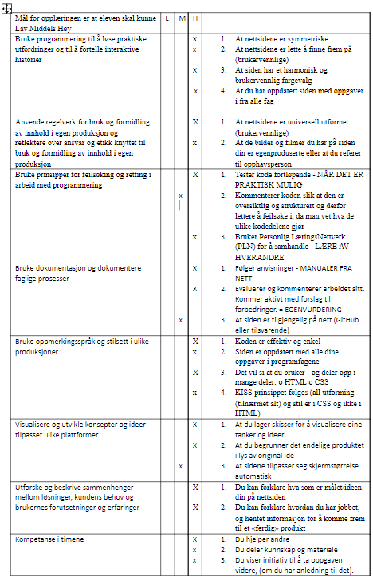

Min Arbeidsbok
Videoer
Hei jeg heter Stian
Dette er hvordan jeg har jobbet så langt
Jeg begynte først med en skisse:

Jeg tenkte først på hvordan wikipedia så ut, men så ville jeg ha det symmetrisk. Så kom frem til 4 bokser og en meny. Meny-en kom etter tid.
Jeg har testet veldig mange forskjellige ting og ikke alt ble med i nettsiden, for eksempel en tekst animasjon.
Og en ting jeg har lært er at youtube er det beste stedet å lære koding, og jeg har brukt den til å lære nesten alt i nettsiden.
Dette var den gamle nettsiden min:

Målet mitt med denne nettsiden er å ha et sted med alle arbeidsbøker og informasjon så folk kan se ting om meg og hva jeg gjør.
Dette er egenvurderingen min 08.10.2021